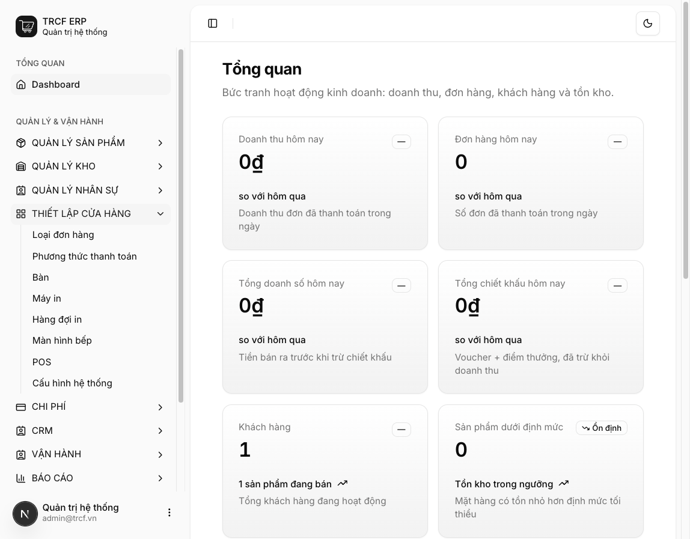
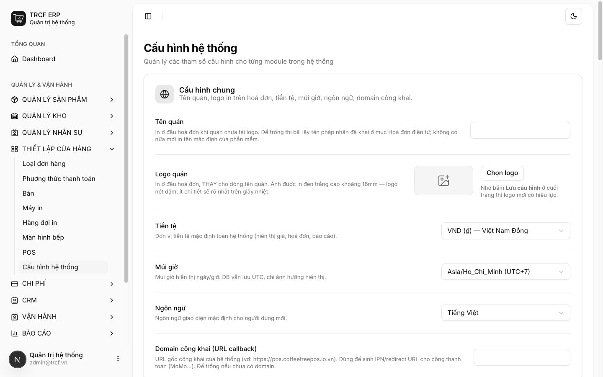
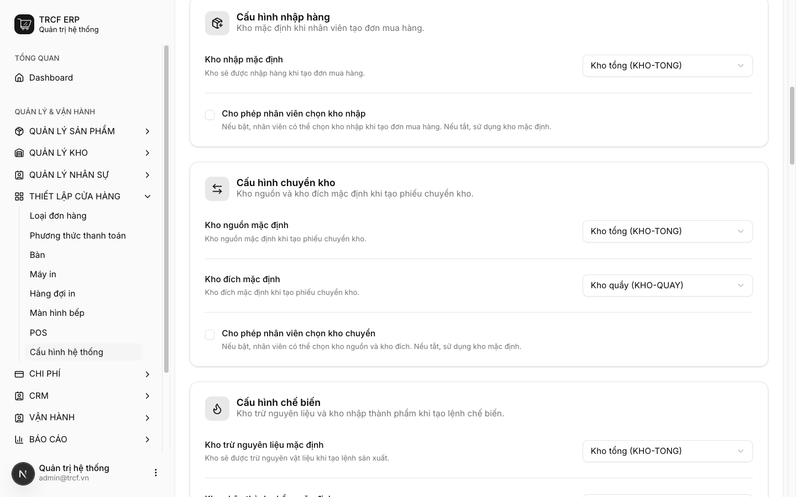
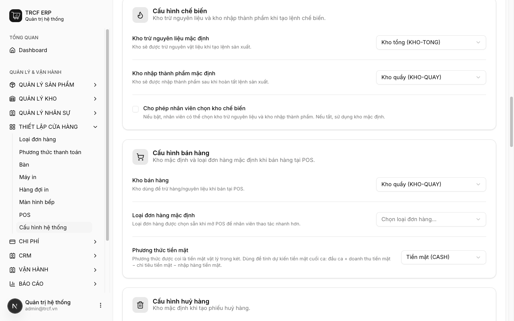
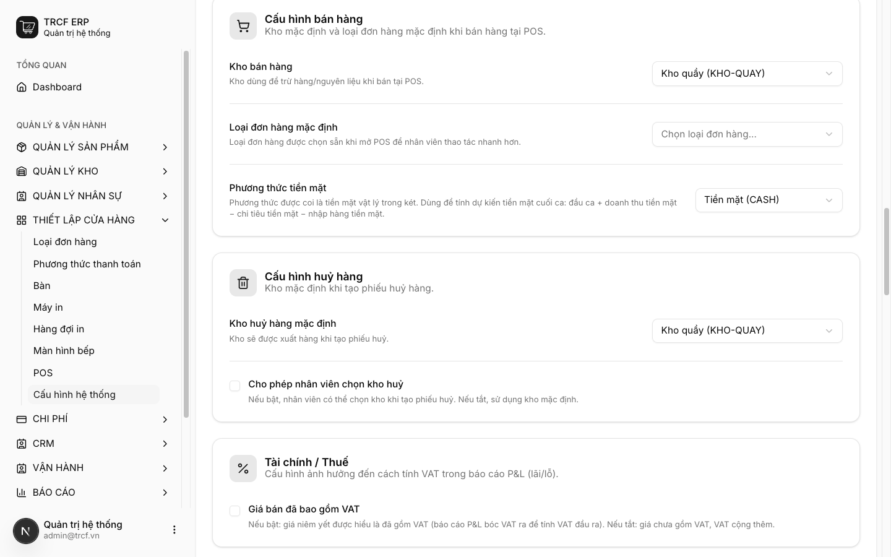
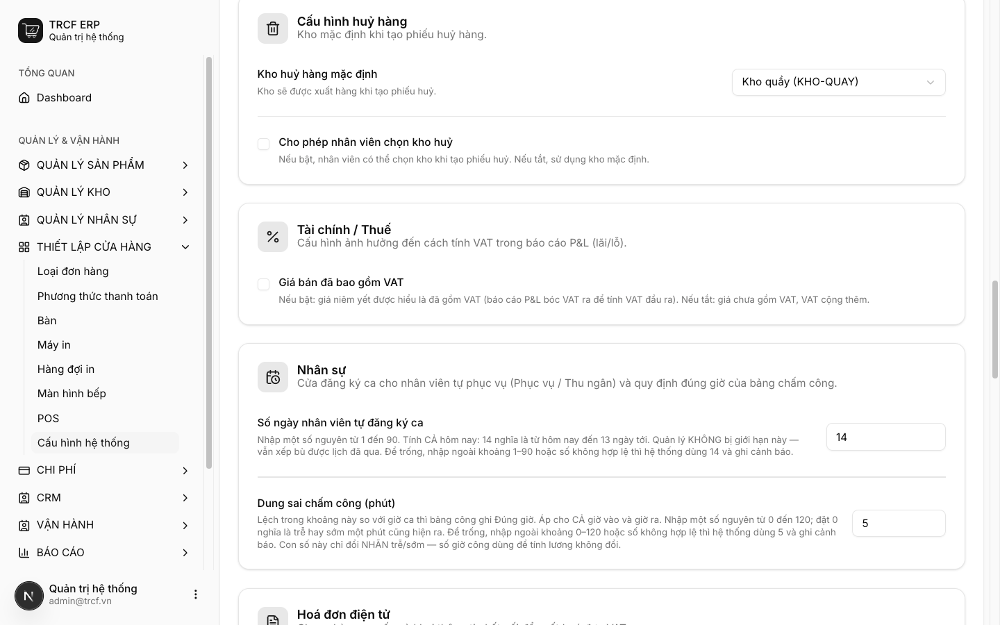
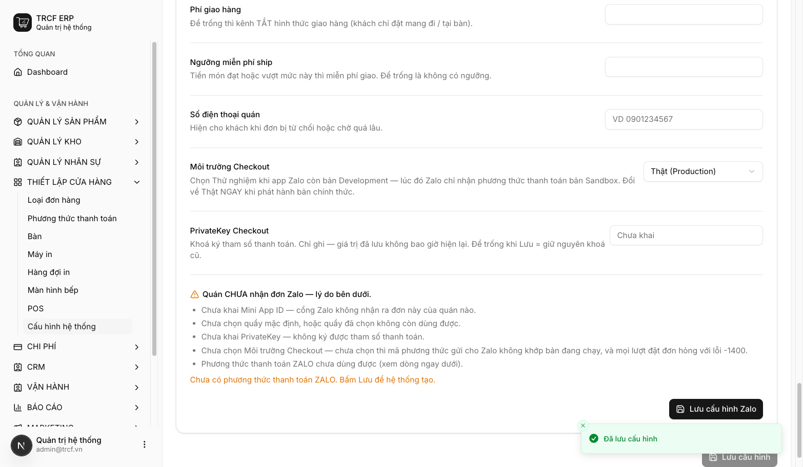

Chương 1 · Cấu hình hệ thống
1.1 Làm quen giao diện và cấu hình thông tin ban đầu
1. Đường dẫn vào chức năng
Menu trái: Thiết lập cửa hàng → Cấu hình hệ thống (địa chỉ /system-settings).
2. Ví dụ nền và các bước thực hiện
Ví dụ: quán có 2 kho, thu bằng tiền mặt.
- Kho tổng (KHO-TONG): chứa nguyên liệu.
- Kho quầy (KHO-QUAY): để bán hàng.
- Phương thức thanh toán: Tiền mặt (CASH).
- Cần tạo trước kho, phương thức thanh toán, loại đơn hàng.
Bước 1Mở trang Cấu hình hệ thống
- Bấm Thiết lập cửa hàng.
- Chọn Cấu hình hệ thống.

Bước 2Khai nhóm Cấu hình chung
- Tiền tệ: chọn "VND".
- Múi giờ: chọn "Asia/Ho_Chi_Minh".
- Ngôn ngữ: chọn "Tiếng Việt".
- Domain công khai: để trống.

Bước 3Khai nhóm Nhập hàng và Chuyển kho
- Kho nhập mặc định: chọn "Kho tổng".
- Kho nguồn: chọn "Kho tổng".
- Kho đích: chọn "Kho quầy".
- Ô tích Cho phép nhân viên chọn kho: bỏ trống.

Bước 4Khai nhóm Chế biến
- Kho trừ nguyên liệu: chọn "Kho tổng".
- Kho nhập thành phẩm: chọn "Kho quầy".

Bước 5Khai nhóm Bán hàng — quan trọng nhất
- Kho bán hàng: chọn "Kho quầy".
- Loại đơn hàng mặc định: chọn "Tại chỗ".
- Phương thức tiền mặt: chọn "Tiền mặt (CASH)" — bắt buộc.

Bước 6Khai nhóm Huỷ hàng và Tài chính / Thuế
- Kho huỷ hàng: chọn "Kho quầy".
- Giá bán đã bao gồm VAT: bật nếu giá đã gồm thuế.
- Nhóm Nhân sự: giữ mặc định.

Bước 7Bấm Lưu cấu hình
- Cuộn xuống cuối trang.
- Bấm Lưu cấu hình.
- Thấy thông báo “Đã lưu cấu hình” là xong.

3. Giải thích các trường
| Nhóm | Trường | Điền gì |
|---|---|---|
| Cấu hình chung | Tên quán | Tên in đầu hoá đơn |
| Logo quán | Logo in đầu hoá đơn (nên dùng logo nét đậm) | |
| Tiền tệ / Múi giờ / Ngôn ngữ | VND · Asia/Ho_Chi_Minh · Tiếng Việt | |
| Domain công khai | Để trống nếu chưa dùng thanh toán online | |
| Nhập hàng | Kho nhập mặc định | Kho tự điền khi tạo đơn mua |
| Cho phép nhân viên chọn kho nhập | Bật: nhân viên được đổi kho. Tắt: dùng kho mặc định | |
| Chuyển kho | Kho nguồn / Kho đích mặc định | Kho mặc định của phiếu chuyển |
| Cho phép nhân viên chọn kho chuyển | Bật: nhân viên được chọn kho | |
| Chế biến | Kho trừ nguyên liệu / Kho nhập thành phẩm | Kho lấy nguyên liệu và kho nhận thành phẩm |
| Cho phép nhân viên chọn kho chế biến | Bật: nhân viên được chọn kho | |
| Bán hàng | Kho bán hàng | Kho bị trừ khi bán tại POS |
| Loại đơn hàng mặc định | Loại đơn chọn sẵn ở POS | |
| Phương thức tiền mặt | Bắt buộc Phương thức tính là tiền mặt trong két | |
| Huỷ hàng | Kho huỷ hàng mặc định | Kho ghi nhận hàng hỏng |
| Cho phép nhân viên chọn kho huỷ | Bật: nhân viên được chọn kho | |
| Tài chính / Thuế | Giá bán đã bao gồm VAT | Bật nếu giá niêm yết đã gồm thuế |
| Nhân sự | Số ngày nhân viên tự đăng ký ca | 1–90, mặc định 14 |
| Dung sai chấm công (phút) | 0–120, mặc định 5. Lệch trong khoảng này vẫn tính Đúng giờ | |
| Hoá đơn điện tử | Minvoice (MST, token, ký hiệu…) | Chỉ điền khi xuất hoá đơn GTGT → mục 5.5 |
| Đặt hàng Zalo | Mini App ID, quầy nhận đơn, phí ship… | Chỉ điền khi bán qua Zalo. Có nút Lưu cấu hình Zalo riêng |
4. Lưu ý quan trọng
⚠️
Phải chọn ô Phương thức tiền mặt.
- Bỏ trống: mở ca, đóng ca vẫn chạy.
- Nhưng không sinh bút toán quỹ.
⚠️
Phải chọn đủ các ô kho.
- Thiếu ô nào, nhân viên báo lỗi “chưa cấu hình kho”.
- Không lập được phiếu tương ứng.
⚠️
Nhóm Đặt hàng Zalo: bấm nút Lưu cấu hình Zalo riêng.
💡
Quán chỉ có 1 kho: chọn cùng kho đó cho tất cả các ô.